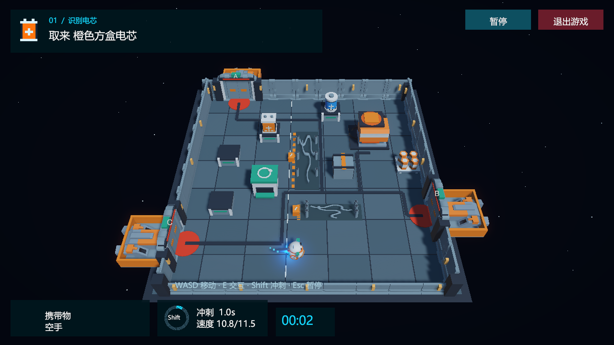
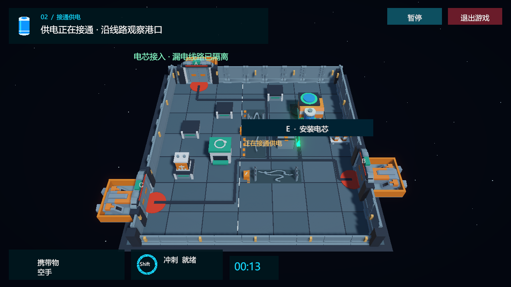

停电救援：M-07
停电让一台维修机器人被困在货运站。识别电芯、磁吸搬运、恢复应急供电，再沿亮起的线路前往救援港口。
A1.0 对应已验证的 V2.1 游戏；本页用于项目介绍。
Station Rescue: M-07
A blackout traps a maintenance robot in a cargo station. Identify and carry the right battery, restore emergency power, then follow the illuminated route to a rescue dock.
A1.0 freezes the verified V2.1 game. This page introduces the project.

核心玩法
- 根据发电机插槽识别所需电芯。
- 拾取并搬运，绕开周期放电的电缆。
- 安装正确电芯，让绿色能量沿线路传播。
- 在本局开启的港口手动登船。
Gameplay loop
- Identify the battery required by the generator.
- Pick it up, carry it, and avoid periodic arcs.
- Install it and watch power travel along the route.
- Interact to board at this run's selected dock.
操作与运行
WASD / 方向键移动；Shift 冲刺；E 或附近按钮交互；Esc 暂停；R 重开。
用 Unity 6000.6.4f1 打开仓库根目录，进入 Assets/Scenes/Menu.unity 后 Play。Windows 完整包解压后运行 StationRescue.exe。
Controls and running
WASD / arrows move; Shift boosts; E or the nearby button interacts; Esc pauses; R restarts.
Open the repository in Unity 6000.6.4f1, open Assets/Scenes/Menu.unity, then press Play. For the complete Windows package, extract it and run StationRescue.exe.
看得见的动作与供电
Visible movement and power


验证与下一阶段
既有 Editor 回归 317 项通过；Windows 主程序与解压包各 176 项通过；干净 clone 的首次导入、编译与回归已验证。报告在 验收记录。
后续 B 接 Python 控制，C 接视觉模型，D 做记忆与重规划实验；当前尚未实现。
Validation and next steps
Existing Editor regression: 317 checks passed. Windows and extracted-package runs: 176 checks each. Clean-clone import, compilation, and regression were verified. See the validation record.
Planned work: B adds Python control, C adds visual-model gameplay, and D tests memory and replanning. These features are not implemented yet.